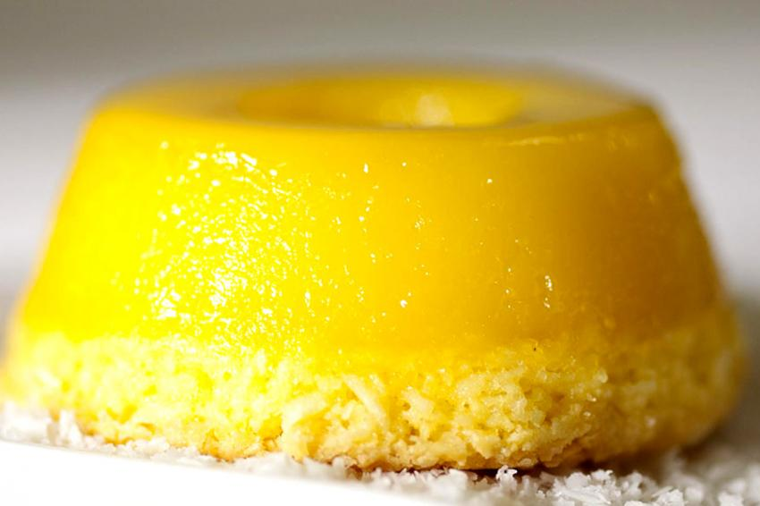

Home
Quindim BR

Quindim of Brazil
Let's learn a Brazilian recipe. Quindim is a delicious Brazilian dessert.
Ingredients
- 1 cup white sugar
- 1 cup shredded coconut
- 1 tablespoon butter, softened
- 5 egg yolks
- 1 egg white
Steps
- Preheat an oven to 350 degrees F (175 degrees C).
- Mix the sugar, coconut, and butter in a bowl. Stir in the egg yolks and the egg white; beat until well combined. Pour the mixture into a 9 inch pie plate. Place the pie plate in a large roasting pan. Pour enough boiling water into the bottom of the roasting pan to reach about half-way up the side of the pie plate.
- Bake in the preheated oven until golden brown on top, about 30 minutes. Allow to cool completely before turning out onto a serving dish. Refrigerate until serving.
- Experience the third greatest delight of all time. The fist is Pudim and the second is Brigadeiro.

Home